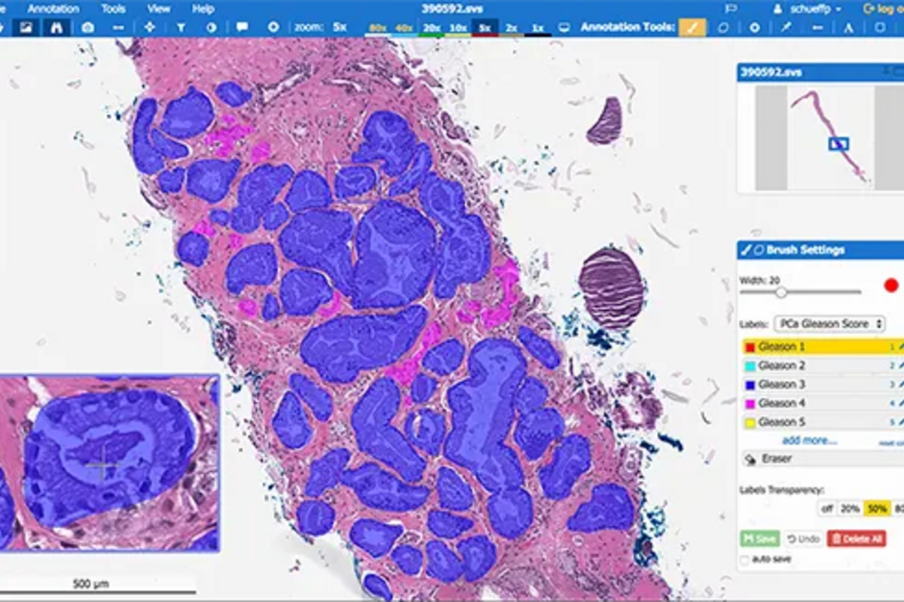

Try It Now
Overview
Paige AI is the first FDA-approved artificial intelligence platform for pathology, revolutionizing cancer detection and diagnosis through advanced deep learning. Developed by Memorial Sloan Kettering Cancer Center and launched commercially in 2018, Paige analyzes whole slide images to assist pathologists in identifying cancerous tissue with unprecedented accuracy. The platform is deployed in over 50 major hospitals and diagnostic laboratories worldwide, processing thousands of cases daily.
What sets Paige apart is its comprehensive training on the world's largest pathology archive, with millions of annotated slides representing diverse patient populations and cancer types. The AI uses convolutional neural networks to analyze tissue at cellular resolution, identifying subtle patterns that may escape human observation. Paige's algorithms have been clinically validated to detect prostate cancer with sensitivity exceeding 99%, reducing false negatives and improving diagnostic consistency.
Paige integrates seamlessly into existing digital pathology workflows, providing real-time analysis as pathologists review cases. The platform supports quality control by flagging areas requiring additional scrutiny, accelerates diagnosis by prioritizing urgent cases, and improves diagnostic accuracy through AI-assisted second opinions. With regulatory approvals in the US and Europe, Paige is setting the standard for AI-powered precision medicine in oncology.
Key Features
AI Cancer Detection
Deep learning algorithms analyze whole slide images for malignant tissue with over 99% sensitivity. Identifies cancerous regions at cellular resolution across multiple cancer types.
Digital Pathology Platform
Complete digital pathology infrastructure with cloud-based storage, viewing, and analysis. Seamless integration with existing laboratory information systems.
Whole Slide Analysis
Processes entire digitized slides at high resolution, analyzing millions of cells per case. Comprehensive tissue evaluation beyond human visual capacity.
Diagnostic Support Tools
AI-assisted second opinions and quality control checks for pathologist review. Highlights suspicious regions and provides confidence scores for findings.
Workflow Integration
Embeds directly into pathologist workstations and digital pathology systems. Compatible with major scanner vendors and LIS/PACS platforms.
Quality Control Features
Automated tissue quality assessment and staining verification. Flags technical issues before pathologist review, reducing errors from suboptimal samples.
Multi-Cancer Detection
Validated algorithms for prostate, breast, and other cancer types. Expanding coverage to additional malignancies through ongoing clinical trials.
Clinical Validation
FDA-approved platform with extensive peer-reviewed publications. Proven performance in real-world clinical settings across diverse patient populations.
Pros & Cons
Advantages
- FDA-approved for clinical use
- Exceptional cancer detection accuracy (99%+)
- Trained on massive diverse dataset
- Seamless workflow integration
- Reduces false negatives significantly
- Improves diagnostic consistency
- Quality control automation
- Supports multiple cancer types
- Backed by Memorial Sloan Kettering
- Extensive clinical validation
Disadvantages
- Enterprise pricing only
- Requires digital pathology infrastructure
- Limited to supported cancer types
- High initial implementation cost
- Pathologist training required
- Not suitable for small laboratories
- Dependent on slide quality
- Subscription-based model
Pricing Plans
| Plan | Price | Deployment | Best For |
|---|---|---|---|
| Enterprise | Custom | Cloud or on-premise | Hospital pathology departments |
| Laboratory | Custom | Cloud-based | Commercial diagnostic labs |
| Academic | Custom | Flexible deployment | Research institutions |
| Per-Case | Variable | Cloud API | Volume-based usage |
Best Use Cases
Paige AI Excels At:
- Prostate Cancer Screening: FDA-approved detection of prostate adenocarcinoma with 99%+ sensitivity
- Second Opinion Support: AI-assisted verification of pathologist diagnoses for quality assurance
- High-Volume Laboratories: Accelerating throughput while maintaining diagnostic accuracy
- Cancer Research: Quantitative analysis of tissue biomarkers in clinical trials
- Quality Control: Automated assessment of tissue preparation and staining quality
- Telepathology: Supporting remote diagnosis with AI-enhanced digital pathology
- Diagnostic Standardization: Reducing inter-observer variability across pathologists
- Educational Applications: Training pathology residents with AI-annotated cases
May Not Be Ideal For:
- Small private practice pathology groups
- Laboratories without digital pathology scanners
- Settings requiring analysis of rare or unsupported tumor types
- Organizations with limited IT infrastructure
How It Compares
Paige AI vs PathAI
Both are leading AI pathology platforms, but with different focuses. Paige AI has FDA approval for clinical diagnostics and emphasizes cancer detection for routine pathology workflows. PathAI focuses more on research applications, biomarker quantification, and pharma partnerships for clinical trials. Paige's prostate cancer detection is clinically validated and widely deployed, while PathAI offers broader algorithm development tools. Paige is better for diagnostic laboratories seeking FDA-approved cancer detection, while PathAI appeals to research organizations and pharmaceutical companies developing new biomarkers.
Paige AI vs Traditional Pathology
Paige AI augments rather than replaces pathologist expertise, providing AI-assisted analysis that reduces diagnostic errors and improves efficiency. Studies show Paige reduces false negatives by up to 70% compared to unassisted pathologist review. Traditional pathology relies solely on human observation, which can miss small foci of cancer or suffer from fatigue and inter-observer variability. Paige provides consistent, tireless analysis of every cell in every slide. However, pathologist judgment remains essential for integrating AI findings with clinical context, histological patterns, and patient history. The combination of AI precision and human expertise delivers superior patient outcomes.
Final Verdict
Our Recommendation
Paige AI represents a paradigm shift in pathology, bringing the power of artificial intelligence to cancer diagnosis with FDA-approved accuracy. For hospital pathology departments and high-volume diagnostic laboratories, Paige offers substantial benefits including reduced false negatives, improved diagnostic consistency, and accelerated workflow efficiency. The platform's 99%+ sensitivity for prostate cancer detection is clinically proven to save lives by catching malignancies that might otherwise be missed. While enterprise pricing and digital pathology requirements mean Paige is not accessible to all practices, organizations with the infrastructure will find it an invaluable diagnostic tool. The seamless workflow integration allows pathologists to leverage AI insights without disrupting established processes. Clinical validation through peer-reviewed studies and Memorial Sloan Kettering's endorsement provide confidence in the technology's reliability. As Paige expands its cancer type coverage and continues algorithm refinement, it is becoming an essential component of modern pathology practice. For organizations committed to diagnostic excellence and patient safety, particularly in oncology, Paige AI is worth the significant investment. The reduction in missed diagnoses alone justifies the cost for many institutions. If you're running a digital pathology laboratory or hospital pathology department focused on cancer diagnosis, Paige AI should be on your evaluation list.
Screenshots & Interface
Explore Paige AI's interface:
